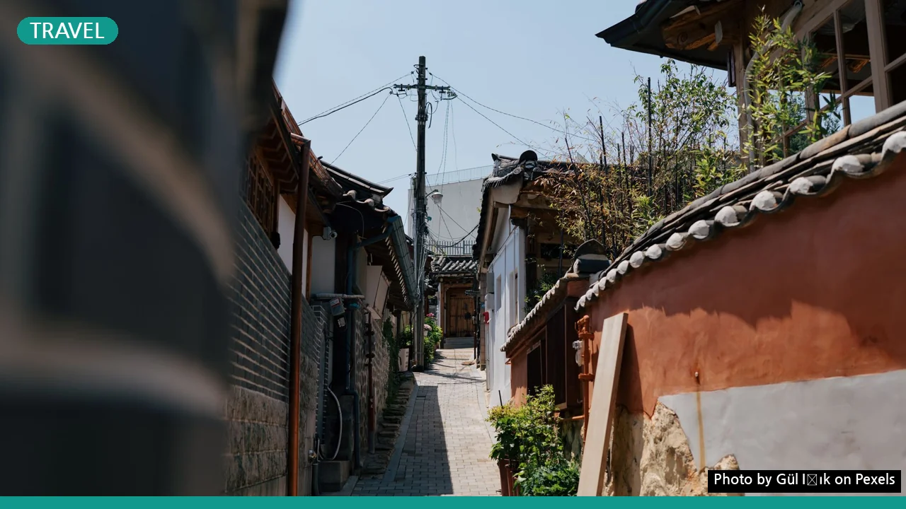

한옥 미식 여행, 초보자도 완벽하게 즐기는 3단계 가이드
사진: Gül Işık / Pexels (무료 이미지, 출처 표기)
한옥 미식 여행, 왜 특별할까요?
일상에서 벗어나 특별한 추억을 만들고 싶으신가요? 고즈넉한 한옥에서 전통 미식을 맛보는 여행은 단순한 휴식을 넘어 오감을 만족시키는 경험을 선사합니다. 차분한 한옥의 아름다움 속에서 지역 특산물로 만든 음식을 맛보고, 전통문화를 체험하는 것은 바쁜 현대사회에서 찾기 힘든 진정한 휴식이 될 수 있습니다.
한국관광공사에서는 한국의 아름다움을 알리기 위해 한옥 스테이(전통 한옥에서 숙박하며 문화를 체험하는 형태)와 지역 미식 연계를 적극 권장하고 있습니다. 이러한 흐름에 맞춰 다양한 한옥과 미식 프로그램들이 생겨나고 있어 선택의 폭이 넓어졌습니다.
나에게 맞는 한옥 숙소 선택 가이드
한옥 미식 여행의 시작은 나에게 맞는 숙소를 찾는 것입니다. 한옥은 크게 전통 방식을 그대로 유지한 곳과 현대적인 편의시설을 접목한 곳으로 나눌 수 있습니다. 어떤 분위기와 편의를 선호하는지에 따라 선택지가 달라집니다.
숙소의 위치도 중요합니다. 전주 한옥마을이나 서울 북촌 한옥마을처럼 도심에 위치한 곳은 접근성이 좋고 주변에 다양한 문화시설이 많습니다. 반면, 안동이나 담양 같은 조용한 지방에 있는 한옥은 자연 속에서 온전한 휴식을 취하며 지역 고유의 미식을 경험하기에 좋습니다.
특별한 미식 프로그램, 어디서 찾고 예약할까?
한옥 미식 여행의 핵심은 바로 '미식 프로그램'입니다. 숙소 자체에서 운영하는 프로그램 외에도, 해당 지역의 특색을 살린 다양한 미식 체험을 찾아볼 수 있습니다.
- 숙소 자체 프로그램: 많은 한옥 숙소는 투숙객을 위한 다도 체험, 전통 한정식, 조식 서비스 등을 제공합니다. 예약 시 어떤 프로그램이 포함되거나 추가 가능한지 확인하는 것이 좋습니다.
- 지역 관광 정보 센터: 각 지역의 관광 정보 센터나 공식 홈페이지(예: 전라북도 관광청, 경상북도 관광 정보)에서 지역 특화 미식 투어, 전통주 빚기, 제철 식재료 요리 강습 등 다양한 프로그램을 안내하고 있습니다.
- 온라인 예약 플랫폼: 일부 온라인 여행 플랫폼에서는 한옥 숙소와 연계된 미식 패키지 상품을 판매하기도 합니다. 검색 시 '한옥 미식 체험', '전통 요리 클래스' 등의 키워드를 활용해보세요.
인기 있는 프로그램은 마감이 빠르므로 2026년 11월 기준 최소 1~2개월 전에 미리 예약하는 것을 권장합니다. 프로그램 내용, 운영 시간, 참가 비용 등을 꼼꼼히 확인하고, 알레르기나 채식 등 특별한 식단이 필요한 경우 사전에 반드시 숙소나 운영 기관에 알려주세요.
잊지 못할 한옥 미식 여행을 위한 준비물
한옥 미식 여행을 더욱 편안하고 즐겁게 만들기 위한 몇 가지 준비물이 있습니다. 전통적인 공간에서 편의성을 높일 수 있는 실용적인 물품들입니다.
- 편안한 옷차림: 한옥은 좌식 생활이 많고, 다도나 요리 체험 시 움직임이 자유로운 옷이 좋습니다. 잠옷도 여유로운 것으로 준비하세요.
- 덧신 또는 편안한 슬리퍼: 한옥 내부에서는 신발을 벗어야 하는 경우가 많습니다. 마당이나 외부 이동 시 편하게 신을 수 있는 덧신이나 슬리퍼를 챙기면 편리합니다.
- 개인 세면도구: 숙소에 비치된 용품 외에 개인적으로 사용하는 샴푸, 칫솔, 치약 등을 챙기면 좋습니다.
- 사진기 또는 스마트폰: 아름다운 한옥의 풍경과 정갈한 음식은 훌륭한 추억이 됩니다. 충전기와 보조배터리도 잊지 마세요.
- 간단한 상비약: 여행 중 발생할 수 있는 가벼운 증상에 대비해 소화제, 밴드 등을 준비하는 것이 좋습니다.
한옥 미식 경험, 더 깊이 즐기는 노하우
단순히 보고 먹는 것을 넘어, 한옥 미식 여행을 더욱 풍성하게 만드는 노하우를 알아봅니다.
- 주인장 또는 현지인과 소통하기: 한옥 주인장이나 지역 주민들은 그곳의 역사, 숨겨진 이야기, 맛집 정보 등을 가장 잘 알고 있습니다. 자연스러운 대화를 통해 더욱 깊이 있는 정보를 얻을 수 있습니다.
- 주변 시장 둘러보기: 여행하는 지역의 전통 시장을 방문해 보세요. 그 지역의 특색 있는 식재료나 길거리 음식을 맛보는 것 자체가 훌륭한 미식 경험이 됩니다.
- 전통 공예 체험: 식사 전후로 다도, 한지 공예, 도예 등 간단한 전통 공예 체험에 참여하면 미각뿐만 아니라 오감을 만족시키는 경험을 할 수 있습니다.
- 여유롭게 산책하기: 한옥 주변의 작은 골목길이나 정원을 거닐며 고즈넉한 분위기를 만끽해 보세요. 바쁜 일상에서는 느끼기 힘든 평화로움을 발견할 수 있습니다.
한옥 미식 여행, 이것만은 주의하세요!
즐거운 한옥 미식 여행을 위해 미리 알아두면 좋은 주의사항입니다.
- 사전 예약 필수: 특히 주말이나 성수기에는 인기 있는 한옥 숙소나 미식 프로그램은 빠르게 마감됩니다. 2026년 11월 기준으로 최소 한두 달 전에는 예약을 완료하는 것이 좋습니다.
- 한옥 에티켓 준수: 한옥은 전통 가옥인 만큼 소음, 금연, 반려동물 동반 불가 등 숙소별로 정해진 규칙이 있을 수 있습니다. 방문 전 반드시 확인하고 준수하여 다른 투숙객에게 피해를 주지 않도록 합니다.
- 교통편 확인: 일부 한옥은 대중교통 접근성이 좋지 않은 곳에 위치해 있을 수 있습니다. 자가용 이용 여부, 대중교통 연계 방법 등을 미리 확인하여 이동에 불편함이 없도록 준비하세요.
- 날씨와 계절 고려: 한옥은 냉난방 시설이 현대식 건물만큼 완벽하지 않을 수 있습니다. 방문하는 계절의 날씨를 고려하여 적절한 옷차림을 준비하는 것이 현명합니다.
정확한 숙소 및 프로그램 정보는 각 한옥의 공식 홈페이지나 해당 지역 관광 정보 센터에서 다시 확인하시길 권장합니다.
🔗 이 글도 함께 보면 좋아요: 고택 체험 완벽 체크리스트: 실패 없는 5단계 준비로 인생 추억 만들기
관련 추천 상품
이 포스팅은 쿠팡 파트너스 활동의 일환으로, 이에 따른 일정액의 수수료를 제공받습니다.